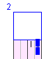

1. Editor
2. Simulator
3. Evaluation Tools
4. An Example Session
5. Algorithms
Definitions of terms and objects in GLD
Some simulated objects have a more restricted or augmented signification then in reality:
- Agent: road users and traffic lights. These interact in the set
infrastructure by using the data they hold on it and other agents to
achieve their goal. When the data that is collected by an agent is used by other agents, of other types, their learning behaviour is called a co-learning strategy.
- Cycle: the distinct time measurement unit, according to these speeds (animation and tracking speed depending on algorithm and computer system):
- Low: 1 cycle/second
- Medium: 2.5cycles/second
- High: 20 cycles/second
- Maximum: 100 cycles/second
- ID: each node is assigned an integer during validation to uniquely identify it.
Used by validation to indicate infrastructure ommisions and in statistics to point info. ID numbers start at 0; special nodes are numbered first, afterwards normal nodes.

- Infrastructure: nodes, with traffic lights or rules, connected by roads. Validation decides if the whole fits technical rules, but the user holds ultimate responsibility. In addition to sound map-making, tweaking the spawn frequencies is neccesary to gain usefull info from the statistics of a simulation.
- Map: a valid infrastructure containing nodes and roads properly linked. Further usefullness may be defined by the mapmaker having given it proper traffic lights or rules, and balancing the type and number of road sides and edge nodes. Only maps can be loaded is the simulator because they are known to be valid.
- Node: a junction between 1-4 roads.
- Edge Node: has only one road and is the only node type with spawns road users, and is also the only node type that can be tweaked with in the simulator, by changing the spawn frequency.
- Junction: links roads and provides rules or traffic lights for control.
- Spawning Frequency: value between 0 and 1 indicating how many road users will be initiated from the edge node the value belomgs to per cycle. A value of 1 indicates one per cycle, 0.5 indicates 1 per 2 cycles, and so on.
- Traffic Light: each lane link to a junction node must have one, or have rules.
- Net-Tunnel: node that provides network connectivity, so that complex cities can be simulated on a network - road users will "dissapear" when they go onto this node and "appear" on a net-tunnel node on a nother machine.
- No Signs: node without traffic lights - has only rules. Useful for forcing certain traffic flows.
- Reinforcement Learning: a learning method that increases effectivenes by trial and error. In the case of GLD, performance of agents is optimized by choosing a configuration that minimizes waiting time when multiple configurations have been tried and one proves smarter. This is done time and again, except for the shortest paths, as there are any number of possible infrastructures and traffic flows.
- Road: must always link two nodes. Road sides and borders are separated bij a black line, and borders between Lanes bij a grey line. Turns have only a visual representation and no influence on the behaviour of road users, because these have no acceleration (they don't slow down in turns).
- Lanes: between 0 and 4 per road side.
- Rules: in the absence of traffic lights, these determine possible routes at junctions.
- Left: whether a road user on the lane that has this property is allowed to take a left turn at the next node (only applicable for junction nodes).
- Straight Ahead: same for ahead.
- Right: same for right turn.
- Side: one for each direction. A side may have 0 lanes, in which case it is void and never used.
- Space: Road users occupy space on a road; a full road can temporarily not accomodate more road users even if these have a green light to proceed upon it.
- Road User: symbolises a car, truck, or bus. Road users start (spawn) at an edge node and follow a certain shortest path to reach their destination, observing the rules at a road and traffic lights. At a junction, the traffic light setting, shortest path, eventual rules and the availability of road space decides whether it moves on. A road user is not intelligent, its path is.
- Automobile: subset of road users with a motorized vehicle - not allowed on the lanes reserved for cyclists.
- Bus: has a greater size than normal cars, and may gain priority at a junction because it carries more passengers.
- Car: has a size of 2 and a normal speed of 2.
- Cyclist: has a size of 1 and a normal speed of 1.
- Passenger: used in some algorithms to give priority to road users that transport more.
- Truck: same as bus, only it gains no priority for extra passengers.
- Traffic Light: represented by one dot at the end of a lane's direction in a junction, which can turn red or green, green meaning proceed if your destination road
has free space, red meaning stay. Road users always follow the rules of a light.
- Combinations: (assuming 4 roads connected to the junction):
- Traffic on 2 facing sides is allowed to move straight or take a right turn, and the others are disallowed (2 possible combinations).
- Traffic on 1 side is allowed on both lanes (4 possible combinations).
- Combinations: (assuming 4 roads connected to the junction):